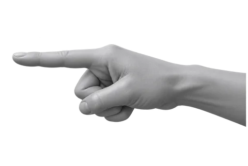

HEADPHONE SHORTCUT
Pause, then resume to trigger SkipIt.

Playing
1
Double-tap the earcup to pause.
2
Double-tap again to resume.
Works with headphones, earbuds, remotes, keyboards, and any other device that can pause and resume the video.